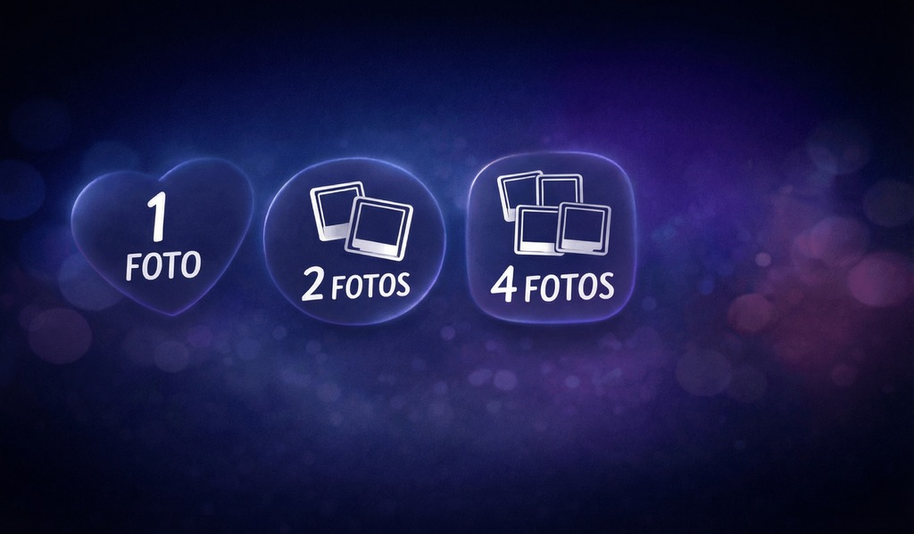
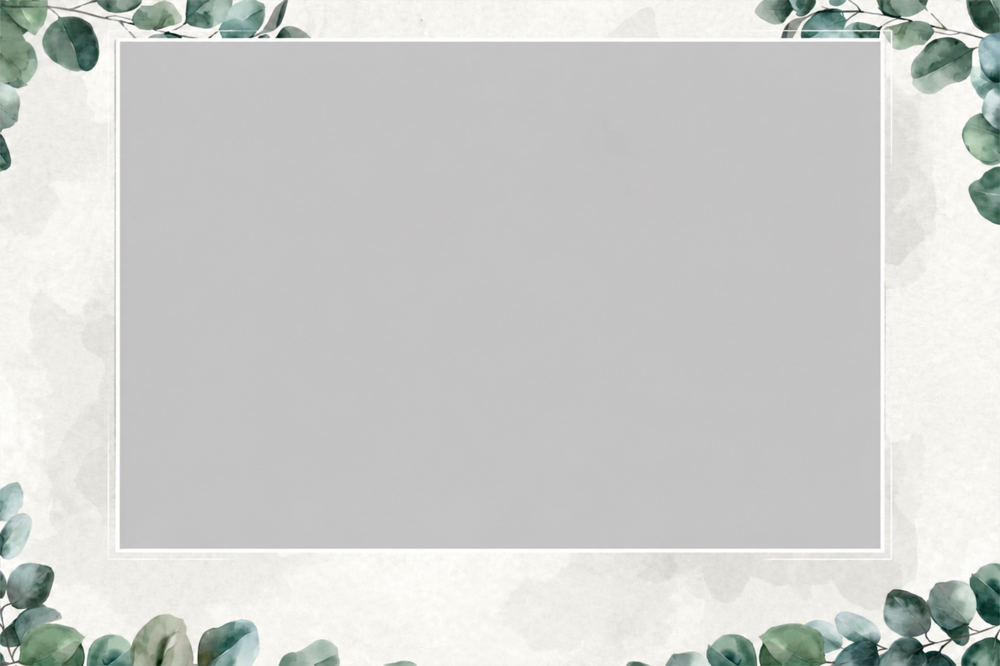
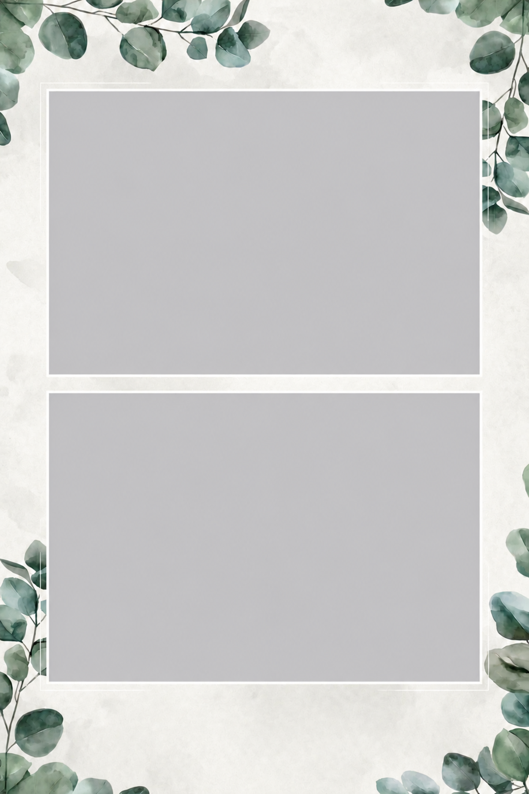
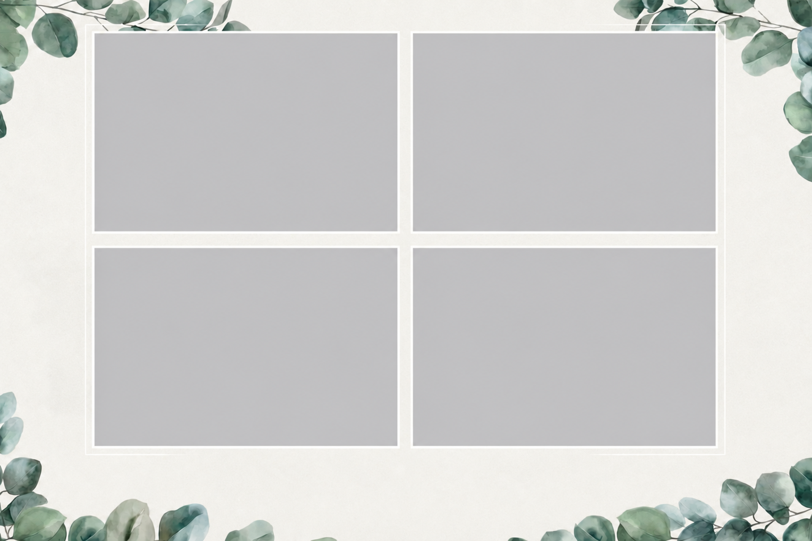
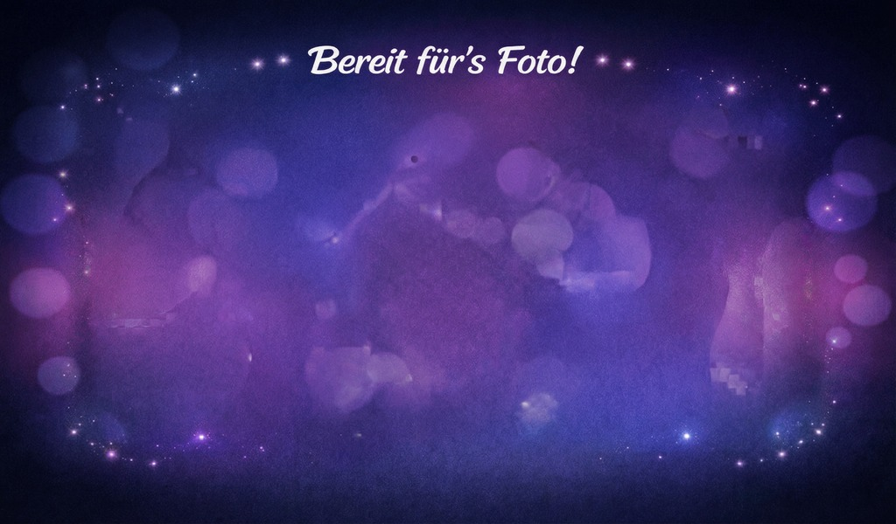
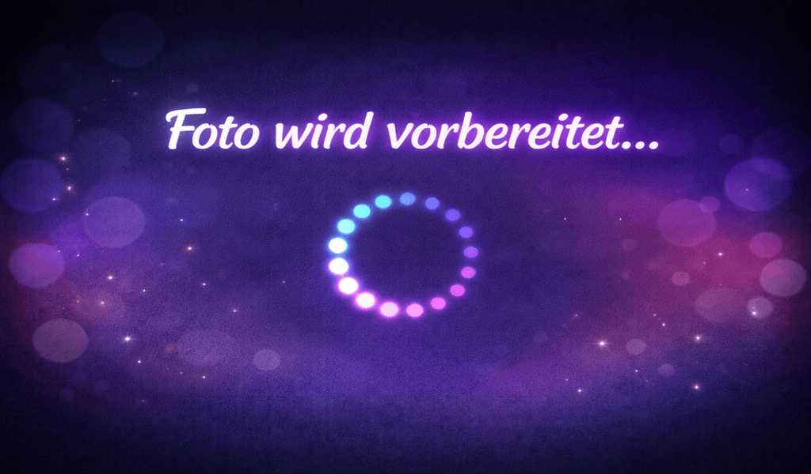
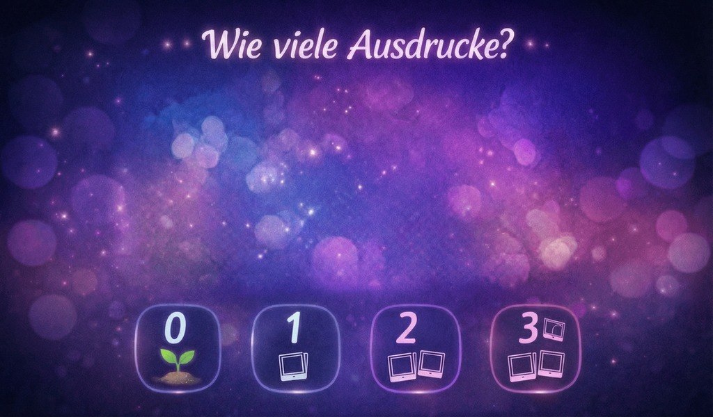

Bedienungsanleitung Fotobox
Diese Anleitung erklärt die Bedienung der Fotobox Schritt für Schritt. Die Fotobox wird über das Touchdisplay bedient. Bitte nicht auf die Kameralinse, das Objektiv oder andere Teile der Box tippen: Ausgewählt wird ausschließlich durch Tippen auf das Display.
1. Aufbau und Einschalten
Zum Starten der Fotobox sind nur wenige Schritte nötig:
- Die Schutzblende vorne an der Kamera entfernen.
- Das Objektiv der Kamera entsperren und durch Drehen auf die richtige Zoom-Einstellung bringen.
- Den Drucker anschließen: Stromkabel und USB-Kabel verbinden.
- Hinten an der Fotobox das Stromkabel anschließen.
- Kurz warten, bis die Fotobox vollständig gestartet ist.
Beim Start erscheint zunächst ein Startbildschirm. Danach startet die Kamera automatisch. Nach kurzer Zeit ist die Fotobox bereit.
2. Hauptmenü
Nach dem Start erscheint das Hauptmenü. Hier kann ausgewählt werden, ob 1 Bild, 2 Bilder oder 4 Bilder aufgenommen werden sollen.
Die Auswahl erfolgt durch Tippen auf den entsprechenden Bereich auf dem Touchdisplay. Bitte nicht auf die Kameralinse tippen – die Linse ist kein Button.
Nach der ersten erfolgreichen Aufnahme wird rechts im Hauptmenü jeweils das zuletzt aufgenommene Bild klein angezeigt. Das dient als kleine Inspiration für die nächsten Gäste.

3. Die verfügbaren Bildrahmen
Je nach Auswahl verwendet die Fotobox einen passenden Rahmen. Die aufgenommenen Bilder werden automatisch in die grauen Bildbereiche eingesetzt.
Einzelbild
Dieser Rahmen ist für eine einzelne Aufnahme gedacht. Er eignet sich besonders gut für ein klassisches Einzelbild, Paarfoto oder Gruppenfoto.

Zwei Bilder
Dieser Rahmen nimmt zwei Bilder auf. Er eignet sich gut, wenn man zwei verschiedene Posen ausprobieren möchte.

Vier Bilder
Dieser Rahmen nimmt vier Bilder auf. Er eignet sich besonders für lustige Bildserien mit verschiedenen Posen.

4. Live-Vorschau und Countdown
Nach der Auswahl erscheint eine Live-Vorschau. Hier können sich die Personen vor der Kamera richtig positionieren, Requisiten zurechtrücken und prüfen, ob alle im Bild sind.
Gleichzeitig läuft ein Countdown. Wenn der Countdown abgelaufen ist, nimmt die Kamera automatisch das Bild auf.

5. Während die Kamera auslöst
Die Kamera braucht einen kurzen Moment, um das Bild aufzunehmen. Währenddessen erscheint ein Verarbeitungsbildschirm. In diesem Moment bitte kurz still stehen bleiben und nicht sofort weglaufen.

Bei zwei oder vier Bildern wiederholt sich dieser Ablauf entsprechend mehrmals.
6. Fertiges Bild und Druckauswahl
Wenn alle Aufnahmen fertig sind, setzt die Fotobox die Bilder automatisch in den ausgewählten Rahmen ein. Danach erscheint das fertige Bild auf dem Display.
Auf diesem Bildschirm kann ausgewählt werden, ob und wie oft das Bild gedruckt werden soll.

Wichtig: Auch wenn der Drucker einmal nicht funktionieren sollte, sind die Bilder in der Regel digital gespeichert. Sie können also später noch übermittelt oder nach Rückgabe der Fotobox erneut ausgedruckt werden.
7. Während des Drucks
Während des Drucks erscheint ein Abschlussbildschirm. Danach kehrt die Fotobox automatisch zum Hauptmenü zurück und ist bereit für die nächsten Gäste.
8. Wenn etwas nicht funktioniert
Die Fotobox reagiert nicht
- Prüfen, ob das Stromkabel hinten an der Fotobox richtig angeschlossen ist.
- Prüfen, ob das Display an ist.
- Falls nichts mehr passiert: Strom trennen, kurz warten und wieder anschließen.
Die Kamera macht kein Bild
- Prüfen, ob die Schutzblende vorne entfernt wurde.
- Prüfen, ob das Objektiv entsperrt und auf die richtige Zoom-Einstellung gedreht wurde.
- Prüfen, ob die Kamera eingeschaltet ist.
- Falls nötig: Fotobox kurz vom Strom trennen, einige Sekunden warten und wieder anschließen.
Der Drucker druckt nicht
- Prüfen, ob der Drucker mit Strom verbunden ist.
- Prüfen, ob das USB-Kabel zwischen Drucker und Fotobox verbunden ist.
- Prüfen, ob Papier und Farbband korrekt eingelegt sind.
- Falls nötig: Drucker und Fotobox einmal neu starten.
Wenn ein Bild nicht gedruckt wird, ist das meistens nicht schlimm. Die fertigen Bilder bleiben normalerweise digital auf der Fotobox gespeichert und können später noch weitergegeben oder gedruckt werden.
9. Abbau
Zum Abbauen die Schritte vom Aufbau einfach rückwärts ausführen.
- Warten, bis die Fotobox nichts mehr macht, kein Bild verarbeitet wird und kein Druck läuft.
- Hinten an der Fotobox das Stromkabel abziehen.
- USB- und Stromkabel des Druckers entfernen.
- Die Schutzblende wieder vorne auf die Kamera setzen.
- Kamera und Objektiv für den Transport sichern.
Bitte den Strom nicht während eines Countdowns, während der Verarbeitung oder während eines Druckvorgangs trennen. Wenn die Fotobox wieder im Hauptmenü ist und nichts mehr arbeitet, kann sie vom Strom getrennt werden.
10. Nach der Veranstaltung
Nach der Veranstaltung können die gespeicherten Bilder gesichert und bei Bedarf erneut gedruckt oder digital weitergegeben werden. Erst nach erfolgreicher Sicherung sollten alte Bilder für die nächste Veranstaltung gelöscht werden.